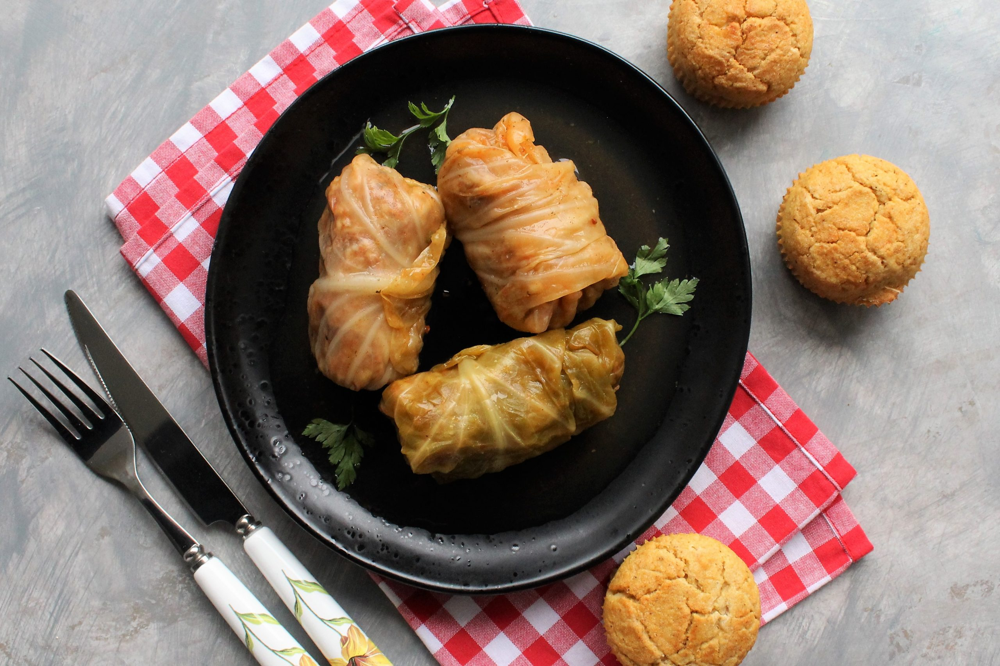

Sarma

This is a recipee for stuffed cabbage also known as sarma
Ingridients
- Cabbage
- Ground Meat
- Bacon
- Onions
- Black papper
- Rice
- smoked ribs
Steps
- Steam the head of cabbage until the outer leaves are limp, then cool it and separate the leaves
- In a bowl mix togather rice, meat and seasoning
- Fill cabbage leaves with the mix previously prepared and roll it
- add tomato sauce, ribs and bacon into the bowl and cook
Back